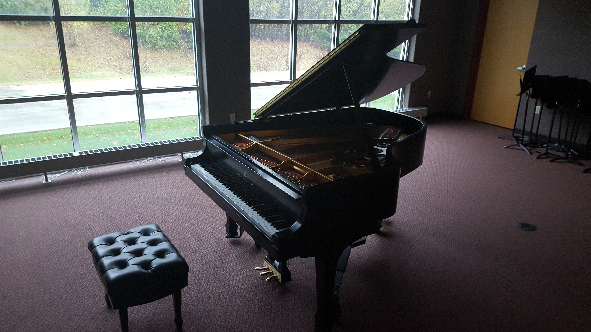

Hello! Welcome to my website! My name is Ramon Moreno and I am a software engineer and musician.
I have a Bachelors in Music with a double major in Computer Science.
I have experience in , React, JavaScript, HTML5, CSS, Mysql and various frameworks including
React, Spring Boot(Java), and Bootstrap(HTML). I enjoy coding and finding out new ways to solve
problems. Through my musical and coding skills I have developed my patients and critical thinking skills
which allow me to be successful when taking on new projects, hobbies and interests.
I have an excellent understanding
of the fundamentals of Object Oriented Programming which allows me to understand and hone new programing
languages. This is very helpful when learning new languages and in turn speeds up my learning time.

Playing the piano has always been a great passion of mine that has followed me throughout my life.
It all started with my K5 teacher playing Winnie the Phoo on the piano, I was mesmerized by the way
She carefully and masterfully navigated in and out of the black and white keys. My mother, an admirer of music herself,
then placed me in public piano lessons and after graduating middle school, I secured a scholarship to study at the
Wisconsin Conservatory of Music, and was admitted into Milwaukee HighSchool of the Arts.
At MHSA I majored in piano and studied classical music, jazz and accompanied the MHSA Choir, Band, String and Symphony Orchestra,
all
while polishing my skills as a pianist. After 4 years of study at both institutions I continued my studies at
Cardinal Stritch University and Majored in Piano Performance (Music). After two years I took up Computer Science
as a double major.
 After years of playing piano I finally decided to teach myself to tune my baldwin
upright piano! It took about a day or two to fully tune the whole keyboard, and quickly
started getting out of tune again, as it had not been properly tuned in about 2 years.
Certain keys on the piano have 3 string and each of them need to be in tune with each other
in order to have a functioning piano. Thanks to my trained musical ear It was easy for me to quickly
pick up on the impurities in tone and fix it. As I keep tuning my piano as I need, Im quickly getting
better and much more efficient in isolating and fixing an out of tune string.
After years of playing piano I finally decided to teach myself to tune my baldwin
upright piano! It took about a day or two to fully tune the whole keyboard, and quickly
started getting out of tune again, as it had not been properly tuned in about 2 years.
Certain keys on the piano have 3 string and each of them need to be in tune with each other
in order to have a functioning piano. Thanks to my trained musical ear It was easy for me to quickly
pick up on the impurities in tone and fix it. As I keep tuning my piano as I need, Im quickly getting
better and much more efficient in isolating and fixing an out of tune string.
After about 15 years of watching dubbed Japanese Shows and Anime, I finally decided to learn Japanese
as my third language! As an advent reader I have always loved to immerse myself in the study of
other cultures and histories of our world. This lead me to discover anime around 2008 and since then
I have developed a love and admiration for the Japanese and East-Asian cultures. I started my self studies
in early July and since then, dedicated time to read and write all 46 Hiragana, and 46 Katakana Syllabary
along with around 100 memorized Kanji and beginning sentence structures.
According to the Japanese
government in order to be considered fluent in Japanese one requirement is to learn the around 2100 Kanji
which are used in Japanese documents, books, signs etc. These Kanji are split up in tests known as the JLPT
(Japanese Language Proficiency Test) which comes in 5 levels, JLPT 5, 4, 3, 2, and 1. In my studies I have
read that one only really needs to pass JLPT 3 to read well overall, and will need to look up some Kanji/words.
I do plan to take JLPT 3 and if all goes well I will continue to JLPT 1.
Day by day I am adding more Kanji and continuing to learn more vocabulary and Japanese grammar.
My Goal is to speak in fluent Japanese and converse with it as fluently as I can with Spanish and English.
To that end I have used apps, and YouTubers as teachers to learn from thoroughly and diligently. I am learning
Japanese all by myself and so far it has been working much better than expected. The internet is truly
a remarkable place with so much information with respect to the Japanese language. YouTube has been a Godsend
in this respect. Not only does it help me write in Japanese better but helps with pronunciation but also
with cultural differences and similarities. One of my end goals is to visit Japan and put my skills to the
final hurdle. After that, I hope to add Korean and Chinese-Mandarin to my list of growing languages,
though, I do not know yet which one to learn first! Time will tell.